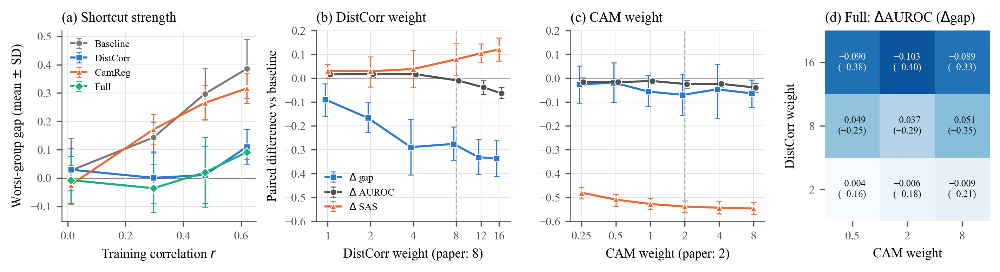

Results
Loss weights and shortcut strength
Two questions: do the results depend on the chosen penalty weights, and do they still hold when the shortcut is weaker?

docs/assets/figures/shortcut_and_weight_sweeps.png (made by analysis/paper_figures.py)Penalty weights#
Close-up on distance correlation (13 runs). Over weights 3 to 7, the gap drops from 0.173 ± 0.092 and bottoms out at 0.081 ± 0.071 at weight 6 (0.106 at weight 7), while AUROC eases down from 0.723 ± 0.023 to 0.702 ± 0.028.
Wide ranges (5 runs, panels b–d):
| What changes | Range | Group gap | SAS | Accuracy |
|---|---|---|---|---|
| Distance-correlation weight | 1 to 16 | Lower at every weight (−0.089 to −0.337) | Never lower | Costs AUROC only from weight 8 up |
| CAM weight | 0.25 to 8 | Small change (−0.018 to −0.070); clearly below zero only at weight 8 (−0.064 [−0.122, −0.007]) | Lower at every weight (−0.480 to −0.546) | — |
| Both, 3 × 3 grid | — | Lower in all nine settings | Lower in all nine settings | Set mostly by the distance-correlation weight |
AUROC change for both fixes, by distance-correlation weight:
| Distance-correlation weight | AUROC change across CAM weights |
|---|---|
| 2 | +0.004 to −0.009 |
| 8 | −0.037 to −0.051 |
| 16 | −0.089 to −0.103 |
So the two-problem result does not depend on the exact weights. The main weights (8 and 2) are one choice along a trade-off between fairness and accuracy.
Shortcut strength#
The main experiment uses a strong shortcut, while the real data has almost none. Panel (a) varies how strong it is (5 runs each). The baseline's gap grows as the shortcut gets stronger:
| Training correlation | Baseline gap |
|---|---|
| None added (r ≈ 0.01) | 0.026 |
| r ≈ 0.30 | 0.143 |
| r ≈ 0.47 | 0.297 |
| r ≈ 0.62 | 0.386 |
Is it really the shortcut?#
Adding the shortcut also makes the training set smaller and changes the share of cancers in it. To rule those out, both were held fixed (about 362 training cases, about 42% cancers):
- Going from no correlation to 0.62 widens the gap by +0.363 [+0.299, +0.427], and every one of the five runs agrees.
- Changing only the training size (−0.015 [−0.076, +0.049]) or only the cancer share (+0.004 [−0.074, +0.083]) has no clear effect.
So the gap is caused by the density shortcut itself.
Weak shortcut and no shortcut#
- Weak shortcut (r ≈ 0.30): distance correlation and both fixes still shrink the gap (−0.143 [−0.190, −0.093] and −0.179 [−0.247, −0.115]). CAM regularization does not (+0.028 [−0.039, +0.079]).
- No shortcut added: there is no real gap (0.026 ± 0.115) and no method changes it. The fixes are for data where a shortcut exists.
The full numbers for each setting are in the table on the next page.